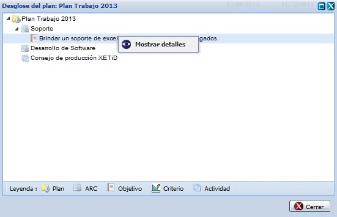
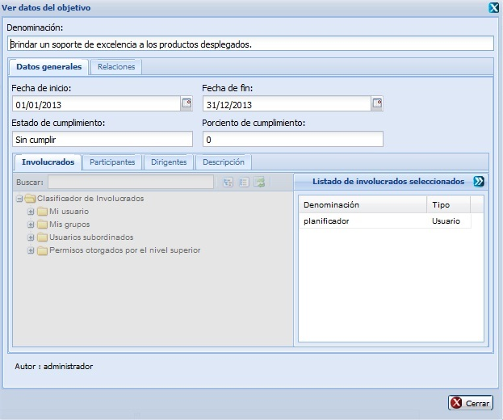
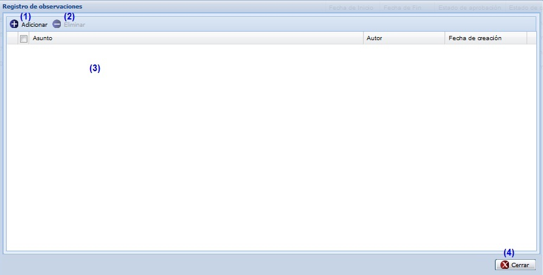
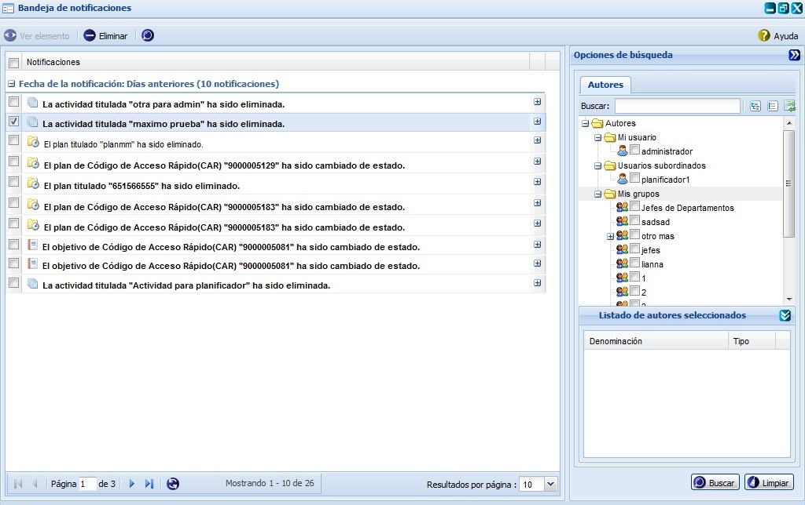
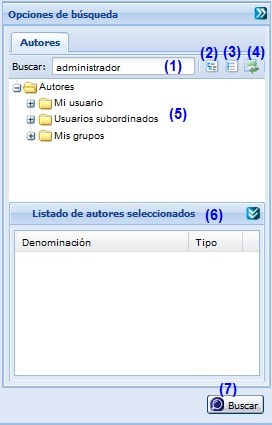
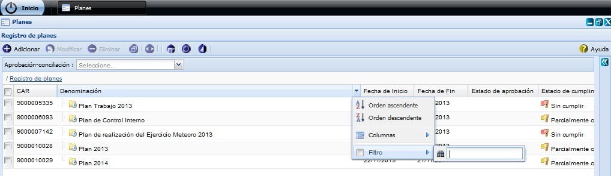

Desglosar plan
Se presiona el botón Desglosar plan de la interfaz, ver opción (4) de la Figura 1. Inmediatamente aparecerá una ventana donde se podrán especificar los datos relacionados con el plan a desglosar, ver Figura 3.

Figura 3. Interfaz Desglosar plan.
Nota: Si desea mostrar detalles de un plan insertado, procede a seleccionar el plan y selecciona mediante clic secundario (derecho) la opción Mostrar detalles, ver figura 3. Una vez presionada dicha opción el sistema le mostrara la interfaz Ver datos del objetivo, ver figura 4. En esta interfaz podrá conocer los datos del elemento seleccionado, estos datos no se permite modificarlos. Dicha interfaz de consulta se puede cerrar dando clic sobre el botón Cerrar que aparece en la parte inferior derecha.

Figura 4. Interfaz Detalles del desglose del plan.
Gestionar observaciones al plan
Para ejecutar esta acción debe seleccionar la opción (5) de la figura 1. Una vez seleccionada la misma el sistema le mostrará una ventana donde se podrán especificar los datos relacionados con el plan que se le desea gestionar una observación, ver figura 5.

Figura 5. Interfaz Registro de observaciones.
- Adicionar observaciones, ver Adicionar observaciones, esta acción permite adicionar observaciones al plan.
- Eliminar una observación previamente seleccionada en el listado de observaciones de un plan. Esta acción permite eliminar la(s) observación(es) deseada(s), una vez seleccionada(s) la(s) misma(s) se procede a seleccionar la opción Eliminar de la interfaz, automáticamente se mostrará un mensaje de confirmación, que se puede Aceptar o Cancelar según sea el caso, de presionar la opción Aceptar el sistema le mostrará un mensaje de información sobre el éxito de la operación realizada, quedando eliminada(s) la(s) observación(es) seleccionada(s), si cancela el mensaje de confirmación, el sistema permanece en la interfaz Registro de observaciones y no elimina la(s) observación(es). Inicialmente la opción Eliminar de la interfaz estará deshabilitado hasta tanto no se haya seleccionado la(s) observación(es) a eliminar.
- Mostrar listado de observaciones del plan.
- Cuando se presione el botón Cerrar de la interfaz el sistema mostrará en el plan seleccionado el campo de Observaciones activo si adicionó alguna observación al plan seleccionado.
Adicionar observaciones
Se presiona el botón Adicionar observaciones de la interfaz, ver opción (1) de la Figura 5. Inmediatamente aparecerá una ventana donde se podrán especificar las observaciones del plan, ver Figura 6.

Figura 6. Interfaz Adicionar observación.
- Introducir el asunto de la observación que desea insertar al plan.
- Introducir la observación del plan. Este dato no es obligatorio.
- Cancelar las acciones y salir de la interfaz sin guardar los datos.
- Adicionar los datos de la observación y cerrar la interfaz. El sistema mostrará un mensaje de información notificando que se adicionó la observación al plan.
Validación de los campos:
- El campo Asunto es obligatorio, en caso de dejar este campo vacío y presionar los botones Aceptar o Aplicar el sistema le mostrará el mensaje de de error: “Por favor verifique hay campo(s) vacío(s).”, al presionar la opción Aceptar de dicho mensaje del sistema le subrayará el campo en rojo y mostrará un mensaje de error, al pasar el cursor del mouse por encima del mismo. Este campo acepta caracteres alfanuméricos y algunos caracteres especiales (“%#@!*() _;:,?-.). Al escribir otro tipo de carácter no permitido notificará subrayando el campo en rojo y mostrando el mensaje de error. Por último debe saber que no es posible adicionar una nueva observación con el mismo asunto de otra que ya está registrada en el sistema, de suceder esto el sistema le notificará con el siguiente mensaje de error.
- El campo Observación puede ser vacío y admite cualquier tipo de caracteres de longitud infinita.
Observar notificaciones
Para ejecutar esta acción debe seleccionar la opción (6) de la figura 1. Inmediatamente aparecerá una ventana donde se podrán observar las notificaciones generadas, ver figura 7. Estas notificaciones son generadas automáticamente al cambiar de estado algún plan.

Figura 7. Interfaz Bandeja de notificaciones.
- Ver elemento que generó la notificación seleccionada. El botón Ver elemento se activa cuando la notificación seleccionada no es de tipo Eliminado, en otros casos se presiona el botón y se muestran los resultados de la notificación. La ventana que se muestra estará acorde con el elemento de la planificación que sea seleccionado, y los datos mostrados en la misma no podrán ser modificados.
- Eliminar notificación. Una vez ejecuta esta acción el sistema le mostrará un mensaje de confirmación que se puede Aceptar o Cancelar según desee, de presionar la opción Aceptar el sistema le mostrará un mensaje de información sobre el éxito de la operación realizada, quedando eliminada(s) la(s) notificación(es) seleccionada(s). Si presiona la opción Cancelar del mensaje de confirmación el sistema cancela la acción y no elimina la(s) notificación(es) seleccionada(s). Esta opción solo se habilitará una vez seleccionada al menos una notificación de las listadas.
- Realizar una búsqueda avanzada. Esta funcionalidad le permitirá efectuar una búsqueda por autores, para ello el sistema le habilitará el panel derecho opciones de búsqueda. Ver figura 8. Para más detalles ver Búsqueda avanzada.
- Cancelar las acciones y salir de la interfaz sin guardar los datos.

Figura 8. Interfaz Bandeja de notificaciones/opciones de búsqueda.
Búsqueda avanzada de autores
Para efectuar una búsqueda avanzada de autores de un plan en específico, debe seleccionar la opción Búsqueda avanzada de la Figura 1, luego de presionado el mismo, el sistema le mostrará la interfaz Opciones de búsqueda donde tendrá que tener en cuenta los siguientes pasos: ver Figura 9.

Figura 9. Interfaz Búsqueda avanzada.
Las diferentes opciones que conforman la figura anterior permiten:
- Introducir el criterio de búsqueda para por el cual desea buscar un autor. Esta acción permite buscar un autor en específico a partir del criterio introducido. Luego de introducido el criterio de búsqueda se muestra el autor que cumple con los datos especificados. En caso de que no exista un autor que coincida con el criterio de búsqueda especificado no se obtendrá ninguna respuesta.
- Expande todos los autores.
- Colapsa todos los autores.
- Refrescar todos los autores.
- Mostrar el árbol de autores existentes.
- Mostrar el resultado de la búsqueda.
- Realizar la búsqueda en el panel izquierdo Registro de planes, de forma tal que al seleccionado un autor o un grupo de usuarios, y presionada esta opción, se muestre en dicho panel cada uno de los planes realizados por los usuarios de un grupo o el usuario seleccionado. De no existir planes a mostrar el sistema no le mostrará ninguna información.
Buscar plan por columna
Para realizar esta funcionalidad se debe estar en la interfaz principal Planes, ver Figura 1, una vez que accedió a la misma se presiona clic en el botón  que aparece en la parte derecha de cada columna, ver Figura 10.
que aparece en la parte derecha de cada columna, ver Figura 10.

Figura 10. Búsqueda por filtrado de columnas de la interfaz.